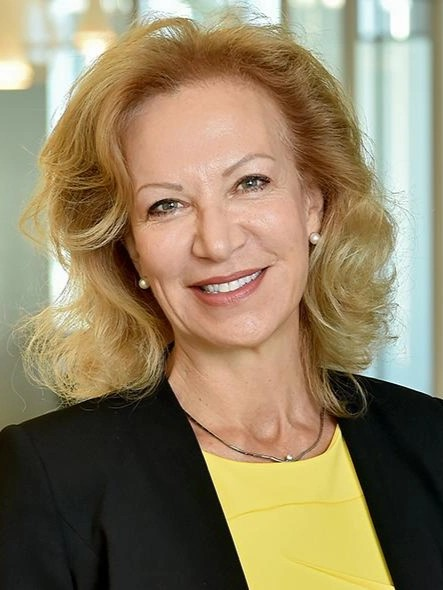

ALEXANDER KHANIKAEV
Cobb Family Eminent Scholar Endowed Chair & Professor at CREOL, UCF
Optics & Photonics
Website:
Alexander Khanikaev CREOL
Areas of Expertise/Research:
- Electromagnetics
- Optics
- Photonics
- Condensed Matter Physics
- Metamaterials
ANDREA ALÙ
Einstein and Distinguished Professor at the Graduate Center, CUNY
Director of Photonics Initiative at ASRC, CUNY
Website:
Metamaterials and Plasmonics Research Lab
Areas of Expertise/Research:
- Electromagnetics
- Metamaterials
- Plasmonics
- Nano-optics
- Acoustics

PATRIZIA CASACCIA
Director of Neuroscience Initiative at ASRC, CUNY
Einstein Professor at the Graduate Center, CUNY
Biochemistry, Biology, Neuroscience
Website:
Patrizia Casaccia ASRC
Areas of Expertise/Research:
- Epigenetics and Gene Regulation
- White Matter Biology and Environmental Influences
- Gut-Brain Axis and Microbiome
- Mitochondrial Bioenergetics


REIN V. ULIJN
Director of Neuroscience Initiative at ASRC, CUNY
Einstein Professor at Hunter College, CUNY
Chemistry
Website:
Ulijn Lab
Areas of Expertise/Research:
- Supramolecular materials
- Peptide nanotechnology
- Supramolecular chenistry
- Systems chemistry
RONALD KODER
Professor at the City College of New York, CUNY
Physics, Chemical Engineering, Chemistry and Biochemistry
Website:
Koder Lab
Areas of Expertise/Research:
- Protein Design
- Synthetic Biology
- Renewable Energy
- Biosensing


XI CHEN
Professor, Nanoscience Initiative at ASRC, CUNY
Professor at the City College of New York, CUNY
Chemical Engineering
Website:
ChenLab
Areas of Expertise/Research:
- Evaporation energy
- Water-responsive materials
- Biomaterials
- Nanotechnology